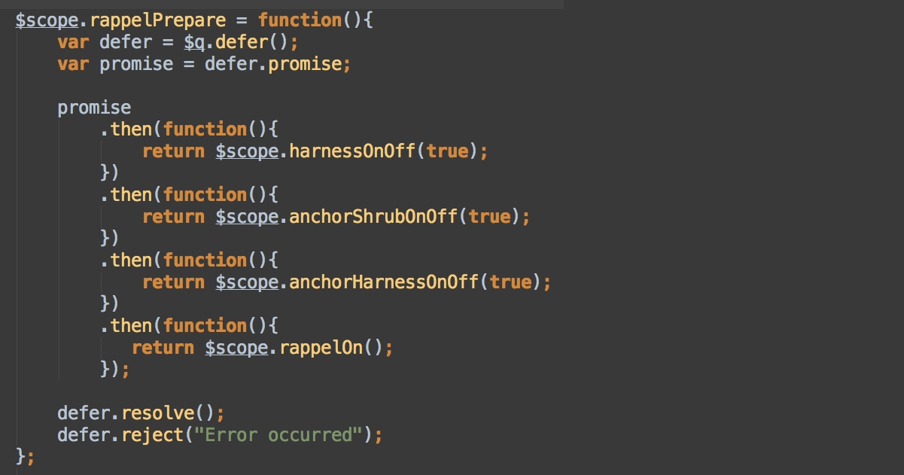

AngularJS Promises Sequential Async
AngularJS Promises Sequential Async
Scott @scottlsoward
Nils @nilsynils
http://ssoward.github.io/sort2014
What's in store
- Browser
- AJAX
- Promise
- AngularJS
AJAX

Nesting

Promise

AngularJS - $http

$http
$http

$http
$http

Mountaineering
$http
$http

$http
Chaining
$q
A promise / deferred implementation inspired by Kris Kowal's Q.
The Deferred API
$q.defer()
- resolve(value) – resolves the derived promise with the value.
- reject(reason) – rejects the derived promise with the reason.
- notify(value) - provides updates on the status of the promise's execution. This may be called multiple times before the promise is either resolved or rejected.
The Promise API
$q.defer().promise
-
then(successCallback, errorCallback, notifyCallback) calls one of the success or error callbacks asynchronously as soon as the result is available.
catch(errorCallback) – shorthand for promise.then(null, errorCallback)
finally(callback) – allows you to observe either the fulfillment or rejection of a promise.
$q
$q

$q.all()

Jam on it!
/
#